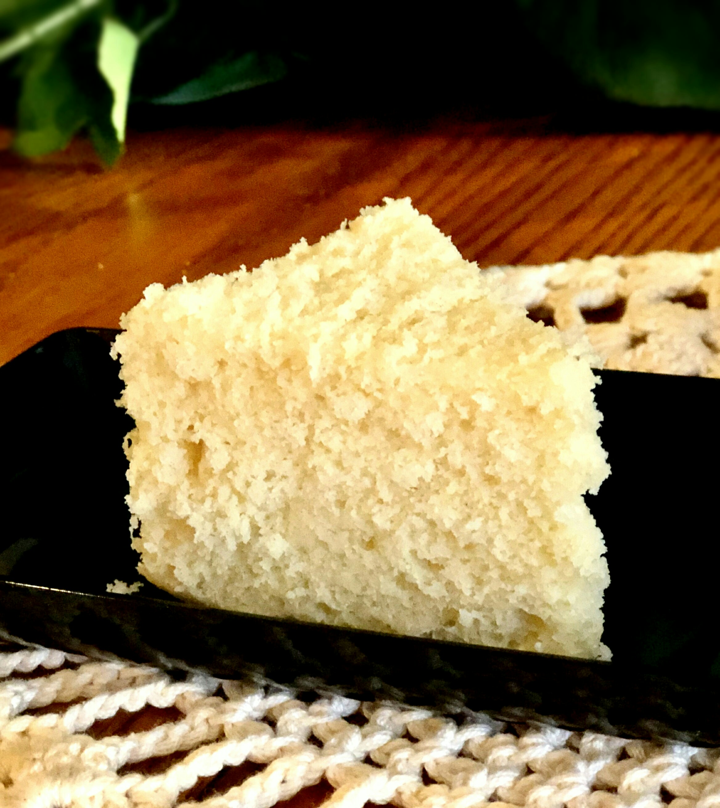

The vanilla cake is very delicious. The cake comes out very moist, very good for after dinner dissert. Total 50 minute prepare and cook time. The cake takes 20 minutes to prepare and cooks in 30 minutes and yields one 9x9-inch cake.
Step 1
Preheat the oven to 350 degrees F (175 degrees C). Grease and flour a 9x9-inch pan.
Step 2
Beat sugar and butter together in a medium bowl until creamy. Beat in eggs, 1 at a time; stir in vanilla extract and almond extract.
Step 3
Combine flour, cornstarch, baking powder, and salt in another bowl. Add to the creamed mixture and mix well. Stir in milk until batter is smooth. Pour or spoon batter into the prepared pan.
Step 4
Bake in the preheated oven until it springs back to the touch, 30 to 40 minutes.
https://www.allrecipes.com/recipe/277883/homemade-vanilla-cake/